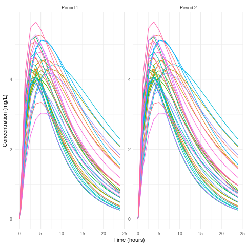

import rpy21. R, SAS, Python을 사용하여 통계 분석을 수행한 경험
1.1. R은 주로 데이터 시각화와 모델링에 사용
ggplot2,dplyr,tidyr
%load_ext rpy2.ipython%%R
library(ggplot2)
library(dplyr)
two_compartment_model <- function(t, ka, ke, Vc, Vp, dose) {
Cp <- dose / (Vc + Vp) * (ka / (ka - ke)) * (exp(-ke * t) - exp(-ka * t))
return(Cp)
}
t <- seq(0, 24, length.out = 20)
n_subjects <- 36
ka_values <- runif(n_subjects, min = 0.2, max = 0.8)
ke_values <- runif(n_subjects, min = 0.05, max = 0.15)
Vc_values <- runif(n_subjects, min = 8, max = 12)
Vp_values <- runif(n_subjects, min = 3, max = 7)
dose <- 100
seq <- rep(c('1', '2'), each = 18)
set.seed(123)
seq <- sample(seq)
Conc1 <- list()
Conc2 <- list()
for (i in 1:n_subjects) {
ka <- ka_values[i]
ke <- ke_values[i]
Vc <- Vc_values[i]
Vp <- Vp_values[i]
period <- seq[i]
Cp <- two_compartment_model(t, ka, ke, Vc, Vp, dose)
Conc1[[i]] <- Cp
}
for (i in 1:n_subjects) {
ka <- ka_values[i]
ke <- ke_values[i]
Vc <- Vc_values[i]
Vp <- Vp_values[i]
period <- seq[i]
Cp <- two_compartment_model(t, ka, ke, Vc, Vp, dose)
Conc2[[i]] <- Cp
}
df1 <- data.frame(
Time = rep(t, n_subjects),
Concentration = unlist(Conc1),
Subject = rep(1:n_subjects, each = length(t)),
Period = rep("Period 1", n_subjects * length(t))
)
df2 <- data.frame(
Time = rep(t, n_subjects),
Concentration = unlist(Conc2),
Subject = rep(1:n_subjects, each = length(t)),
Period = rep("Period 2", n_subjects * length(t))
)
df <- bind_rows(df1, df2)
ggplot(df, aes(x = Time, y = Concentration, group = Subject, color = factor(Subject))) +
geom_line() +
facet_wrap(~ Period, scales = "free_y") +
xlab("Time (hours)") +
ylab("Concentration (mg/L)") +
theme_minimal() +
theme(legend.position = "none")
- Python Version link
1.2. SAS는 주로 임상 시험 데이터 분석에 사용
- STDM으로 ADAM set을 구성하는 CDISC standards 기반
1.3. Python은 주로 논문 분석에 사용
pandas,numpy,scipy,statsmodels등을 활용하여 데이터 전처리 및 통계 모델링을 진행합
2. 임상 시험 데이터에서 통계 분석을 어떻게 진행했는지 설명
2.1. 임상 시험에서는 주로 환자 그룹 간의 차이를 분석하기 위해 t-검정, ANOVA, 회귀 분석 등을 사용
- t-test
- 순서군간 검정(나이, 키, 몸무게 평균이 다른지 등)
- ANOVA
- 2 by 2
- fisrt parameters(보통 auc, cmax)의 log 변환값을 종속변수로 놓고 치료군, 시기군, 순서군은 고정효과, 개인별 차이는 랜덤효과로 놓고 mixed effect model 결과 확인
sas로 분석해서proc mixed,proc glm사용- 고정 효과는 일정한 효과를 미치는 변수들,
- 랜덤 효과는 그룹 안에서도 달라질 수 있는 변수들
- 2 by 2
- 회귀분석
- 항정상태 확인할때, 평균이 0과 같은지 등
2.2. Cox 비례 위험 모형을 통해 생존 분석을 진행
- 정리 link
- Cox 비례 위험 모형은 생존 분석에서 사용된다. 특정 event가 발생하는 시간을 분석할때 사용되며, hazard rate를 예측한다.
- Cox 비례 위험 모형은 비례 위험 가정이 핵심이다. 독립 변수들이 event에 시간이 지날수록 일정한 rate로 영향을 미친다고 가정한다.
- 시간도 일정하게 지나가고 event 발생하는 위험도 일정하게 변화한다고 본다.
- 시간 t에서의 위험함수를 구하기
- 기초 위험 함수와 각 독립변수의 hazard ratio의 곱
- cox 모형은 기초 위험 함수를 추정하지 않고 hazard ratio만 추정한다.
- 각 변수들의 변화가 시간 t에 미치는 영향을 비교할 수 있지만, 위험 함수는 모른다.
- cox는 비모수적 모델이기 때문에 기초 함수를 몰라도 결과를 해석할 수 있다.
- Kaplan-Meier 생존 분석을 어떻게 수행
- Kaplan-Meier 방법은 환자의 생존 시간을 분석하는 데 사용
- 시간에 따른 생존 확률을 추정
- 치료 그룹 간 생존 곡선을 비교
- 로그순위 테스트를 통해 두 그룹 간의 생존 곡선이 유의미하게 차이가 나는지 확인
2.3. 혼합 모델을 사용하여 반복 측정 데이터를 분석
- 순서군은 1개이고 한 대상자가 약을 매 visit마다 먹고 visit 1, visit 2, visit 3에 혈압 검사를 진행할때 반복측정
- Visit은 고정효과로 놓고 대상자는 랜덤 효과로 놓고 y는 혈압 결과로 놓고 분석
- Visit 2,3의 p value에 따라 0.05를 기준으로 놓고 이보다 작으면 유의미하게 변화했다고 볼 수 있음
- Visit은 고정효과로 놓고 대상자는 랜덤 효과로 놓고 y는 혈압 결과로 놓고 분석
데이터를 정리할 때는 SAS를 사용하여 결측값 처리, 이상치 검토 등을 진행하며, 통계적으로 유의미한 결과를 도출하기 위해 여러 가지 방법을 비교
3. 가설 검정에서 p-value와 신뢰 구간의 차이점
3.1. p value
- 가설 검정에서 귀무 가설의 기각 여부를 판단할 수 있는 척도.
- 일반적 기각 기준은 0.05
- 단일 검정에 대한 결과 제공
3.2. Confidence Interval
- 95% 신뢰 구간은 추정치가 95%의 확률로 이 구간에 포함된다는 의미
- 신뢰 구간은 추정값의 범위를 제공
4. 임상 데이터에서 결측치를 처리하는 방법에 대해 설명
1상 임상에서 농도의 결측치 대체해 본 경험은 없음.
다만 이상반응 결과에서 결측 날짜에 대한 결측치 대체 경험은 있으나 설명 복잡하여 패스..
5. 임상 시험의 유효성과 안전성 분석을 진행 방법
5.1. 유효성
- 치료가 효과적인가?
- mixed model을 이용하여 primary parmeters 값 비교로 동등성 확인
5.2. 안전성
- 부작용은 없나?이상사례는 어느정도인가?
- 이상사례가 치료군별로 어떻게 일어났는지 빈도 분석한 후 카이제곱 검정하여 동등성 확인.
6. 임상 시험에서 샘플 크기
목표는 제1종오류를 줄이는 것(효과 있는데 없다고 할 확률)
- 적절한 샘플 사이즈는 연구비의 낭비를 줄여주고 연구의 신뢰도를 높여준다.
- 샘플 사이즈를 계산할 때 고려해야 할 주요 요소는 유의수준(보통 0.05), 검정력(80% 이상), 효과크기, 그리고 표준편차.
7. 정규성 검정을 위한 방법
- Shapiro-Wilk 테스트, Kolmogorov-Smirnov 테스트, Anderson-Darling 테스트와 같은 방법을 사용
- 히스토그램, Q-Q 플롯 등을 시각적으로 활용하여 데이터의 분포가 정규분포에 얼마나 근접한지 확인
- 정규성을 만족하지 않으면 비모수 검정 방법이나 로그 변환 등을 고려
시계열 teaching assistance할때, 기업 실무자들을 대상으로 했었는데, 그들이 실제 연구에서 정규성 검정의 중요성에 대해 질문했다.
사실 n수가 30이 넘어가면 큰 수의 법칙에 따라 정규성을 만족한다고 가정하기 때문에 실제 분석에서는 영향이 없게 볼 수 있다.
하지만 이상치는 체크해야함
8. 선형 회귀 모델에서 다중공선성을 해결하는 방법
- 다중공선성 문제는 독립 변수들 간에 높은 상관관계를 가질때 발생
- 회귀 계수 추정 결과의 신뢰도에 영향을 미침
- 단계적 회귀, lasso 회귀, pca 등으로 공선성을 줄일 수 있고,
- VIF Variance Inflation Factor를 계산해서 다중 공선성이 높은 factor를 select해서 remove하거나 결합하는 방법을 사용할 수 있음
9. 주성분 분석(PCA)
정리 link
- 고차원 데이터를 차원 축소하여 주요 변수들만을 추출할 때 유용
- 변수 간의 상관관계가 높은 경우, PCA를 통해 주요 구성 요소를 추출하고 이를 통해 데이터를 분석